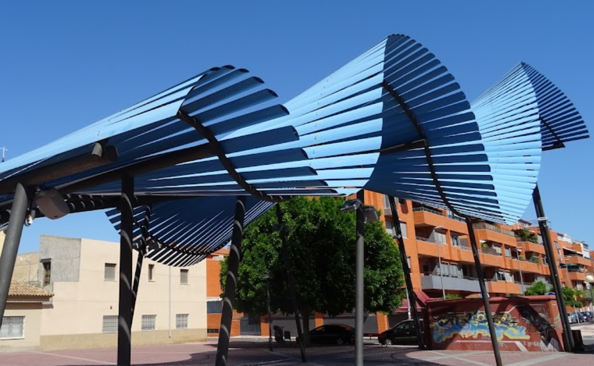
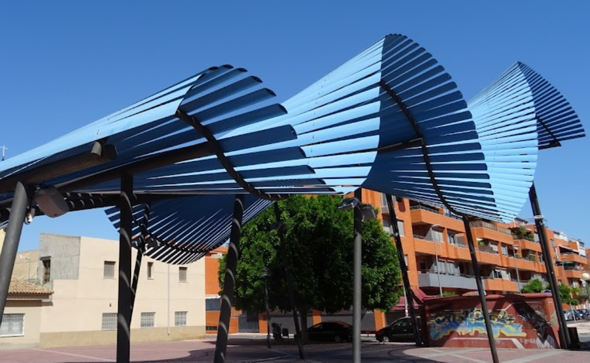

Plaza de Santiago
Salida: 10:00Quedamos frente a la Pérgola. Revisión rápida de bicis y recordatorio de normas de grupo.
Fecha: 1 de marzo de 2026 · Salida: 10:00 (Plaza de Santiago, Murcia)
Distancia: ~39 km | Duración aproximada: 4 h en movimiento
Dificultad: Baja-moderada | Ascenso total: ~186 m
Recorrido circular para familias que combina carril bici urbano, el Campus de Espinardo, un tramo de la Vía Verde del Noroeste y los parajes de la Contraparada y la Rueda de La Ñora. Lleva casco, agua, almuerzo y repuestos básicos. Existe una variante corta usando el tranvía para acortar kilómetros; ver detalle al final de la página.
Quedamos frente a la Pérgola. Revisión rápida de bicis y recordatorio de normas de grupo.
Accedemos por carril bici hasta el campus. Breve parada junto a la Biblioteca General.

Tomamos el antiguo trazado ferroviario hacia el noroeste, tramo cómodo y sin tráfico.

Parada de almuerzo en el área recreativa junto al azud del Segura.

Visita a la noria hidráulica y fotos de grupo.

Regreso hacia Murcia siguiendo el carril bici del río.

Llegada al centro, estiramientos, merienda y juego libre.

Opción pensada para peques: usar el tranvía para recortar parte del recorrido y enlazar solo los tramos más seguros. Consulta y descarga el track:
Revisa las salidas anteriores y comparte los detalles con quienes no pudieron asistir.